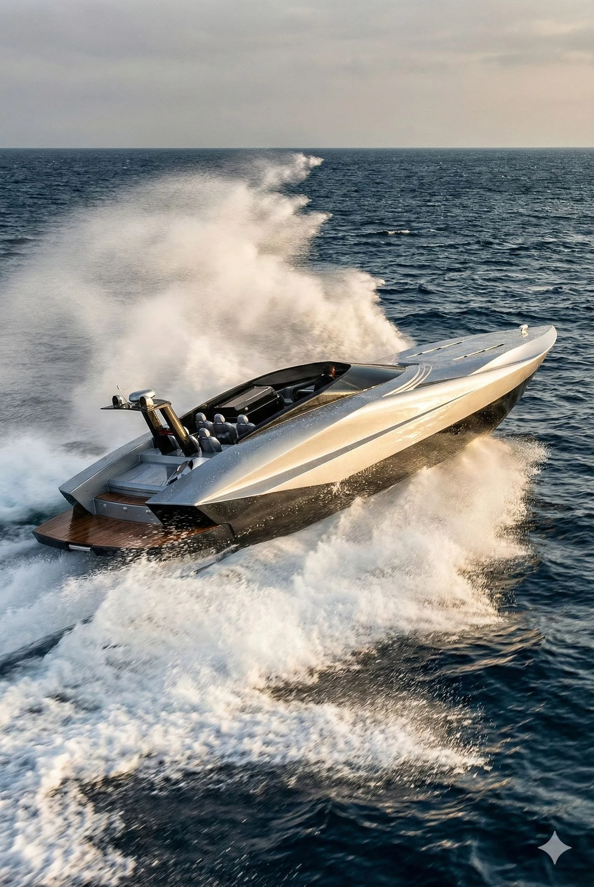
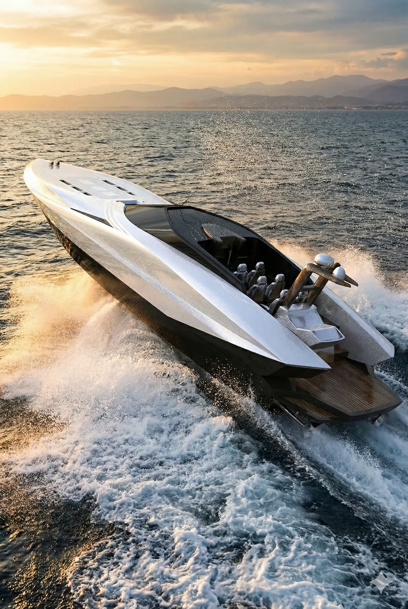
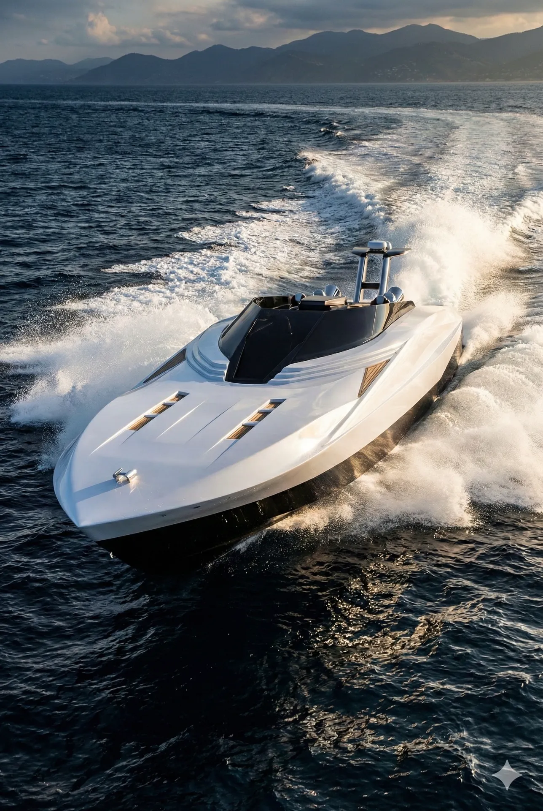
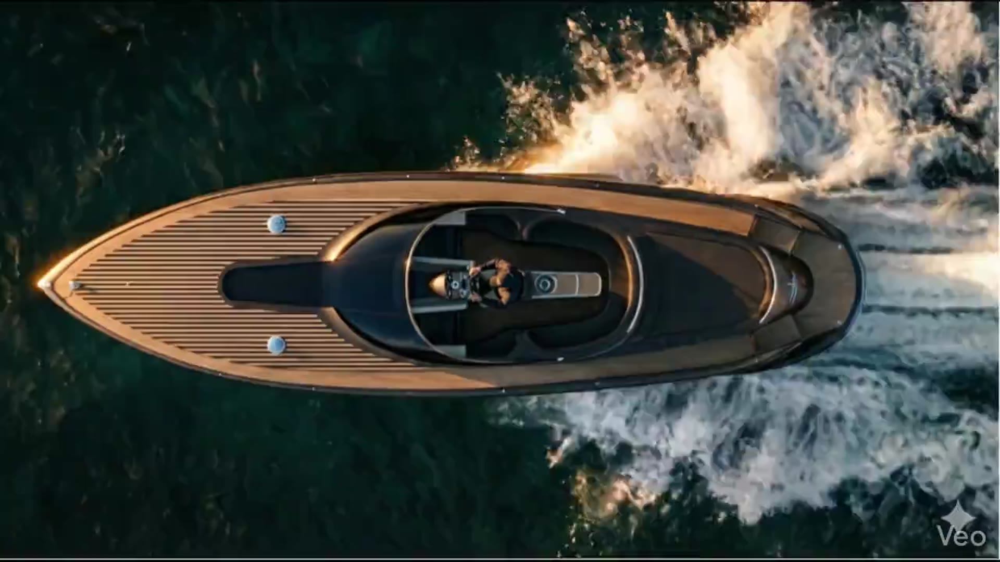

La Collezione / 04 · GranTender 72
GranTender 72
Presenza. Movimento. Libertà.
The Freedom of Open Horizons
GranTender 72 began as an ambitious preliminary styling study, presented in its original archive as a 72-foot PowerMachine. It imagines a tender with the confidence and presence of a substantial sporting yacht.
LA COLLEZIONE / GranTender 72
Il Concept
The original GranTender proposal was conceived to give the idea of a tender greater visual authority and a stronger sense of occasion. The archived presentation includes exterior perspectives, preliminary layout work and studies of cockpit and saloon. These provide a genuine foundation for a distinctive new interpretation without implying the concept has entered VELLARIO production.
LA COLLEZIONE / GranTender 72
Le Linee
The original preliminary styling concentrates on a sporting stance and a strongly recognisable silhouette. Its visual intention is to communicate energy even at rest, holding the composition together instead of fragmenting it with ornament. The archival title is an indication of original design intent, not a verified specification for a future vessel.

LA COLLEZIONE / GranTender 72
La Vita a Bordo
The study considers much more than the outside. Its presentation includes separate explorations of the cockpit and saloon, evidence that the on-board experience was part of the original design conversation. The next phase must determine how those spaces should function together and which elements are appropriate to carry forward.

LA COLLEZIONE / GranTender 72
Dettagli & Materiali
GranTender calls for details that feel purposeful: the meeting of seating and surrounding surfaces, the integration of controls and fittings, and the touchpoints people remember from a day on the water. CAD and rendering files are available in the archive, but they are not proof of approved production materials or finished equipment.

LA COLLEZIONE / GranTender 72
Dati Tecnici
The 72-foot description belongs to the original preliminary PowerMachine study, not a certified production specification for VELLARIO. No propulsion or performance claims are made.
Galleria
GranTender 72 renderings and preliminary design imagery, kept distinct from every other yacht in the collection.




UN INVITO PERSONALE
Contatti
The design house will publish a verified personal contact channel when it is ready to receive enquiries.
CONTATTIDiscover the Collection.
 LA COLLEZIONE 01 / 08Quantum 999Una Linea. Un Carattere.
LA COLLEZIONE 01 / 08Quantum 999Una Linea. Un Carattere. LA COLLEZIONE 02 / 08MAS 36Lo Spirito del Gran Turismo.
LA COLLEZIONE 02 / 08MAS 36Lo Spirito del Gran Turismo.
LA COLLEZIONE 03 / 08MAS 52Eleganza in Movimento. LA COLLEZIONE 04 / 08MAS 56La Forza dell'Equilibrio.
LA COLLEZIONE 04 / 08MAS 56La Forza dell'Equilibrio. LA COLLEZIONE 05 / 08LariocabL'Essenza del Lago.
LA COLLEZIONE 05 / 08LariocabL'Essenza del Lago. LA COLLEZIONE 06 / 08FY70Lo Stile Senza Compromessi.LA COLLEZIONE 07 / 08GranTender 72Presenza. Movimento. Libertà.
LA COLLEZIONE 06 / 08FY70Lo Stile Senza Compromessi.LA COLLEZIONE 07 / 08GranTender 72Presenza. Movimento. Libertà. LA COLLEZIONE 08 / 08Gran MarlinL'Anima del Mare Aperto.
LA COLLEZIONE 08 / 08Gran MarlinL'Anima del Mare Aperto.